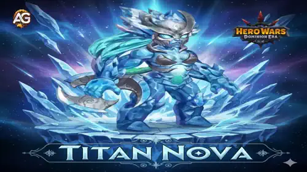
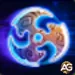
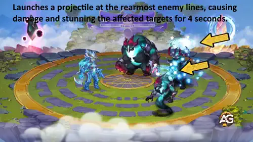
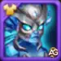
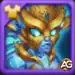
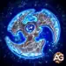

Nova explode no campo de batalha como uma titã atiradora fenomenal, dominando a linha do meio com um poder de fogo incomparável.
Com estatísticas de ataque extraordinárias e potencial máximo de poder, Nova representa o auge da excelência em combate à distância.
Este guia abrangente desvela os segredos para aproveitar as habilidades devastadoras de Nova e conquistar a vitória em cada encontro.
Você está pronto para liberar o potencial explosivo de Nova? Este guia especialista revela tudo que você precisa para dominar esta titã atiradora de elite,
desde otimização avançada de construção até táticas de batalha que garantem sucesso. Se você procura domínio competitivo ou puro dano de saída,
Nova oferece poder extraordinário. Transforme sua jogabilidade e torne-se inarrável com a força incrível de Nova hoje!

Guia Nova - Hero Wars: Dominion Era, um jogo desenvolvido pela Nexters.
Quem é Nova?
Visão Geral de Estatísticas da Titã
Poder: 206.326
Ataque: 1.286.286
Saúde: 7.746.415
Armadura Elemental: 97.482
Dano Elemental: 709.635
Função: Atiradora - Fornece dano à distância explosivo da linha do meio
Elemento: Água - Forte contra Titãs de Fogo
Posição: Linha do Meio - Mantém distância ótima enquanto causa dano consistente e alto
Nova se destaca como uma das titãs atiradora mais formidáveis em Hero Wars: Dominion Era. Com capacidades de ataque excepcionais e uma impressionante reserva de saúde,
Nova se destaca em lidar dano sustentado e devastador enquanto mantém posicionamento estratégico durante batalhas prolongadas.
O equilíbrio notável de poder de ataque bruto e dano elemental torna Nova uma titã incrivelmente versátil capaz de se adaptar a qualquer situação de combate.
Seja enfrentando forças inimigas opressoras ou focando poder de fogo em alvos prioritários, a distribuição superior de estatísticas de Nova garante máxima efetividade no campo de batalha.
Dominar as habilidades únicas de Nova e entender sua distribuição de estatísticas é essencial para otimizar a composição do time e alcançar vitória consistente.
Este guia fornece o conhecimento necessário para desbloquear o potencial completo de Nova e dominar cada partida.
Guia de Habilidades de Nova - Hero Wars: Dominion Era
Domine as habilidades devastadoras de Nova que a tornam uma força inarrável em batalhas PvP. Cada habilidade combina poder bruto com efeitos estratégicos para domínio absoluto.

Vento do Norte (Habilidade Primária)
Descrição da Habilidade: Nova lança um projétil devastador na retaguarda inimiga, atingindo com precisão e força.
O ataque causa dano físico de (50% ATQ) e atordoa os alvos afetados por 4 segundos.
Este efeito de atordoamento impede inimigos de agir, tornando-a perfeita para silenciar ameaças da retaguarda inimiga em batalhas PvP.
Cálculo de Dano:Dano = 50% × Seu Ataque Atual
Exemplo com as Estatísticas de Nova: Com o Ataque base de Nova de 1.286.286, Vento do Norte causa: 50% × 1.286.286 = 643.143 dano por golpe.
Este dano base aumenta proporcionalmente com cada aumento de estatística de ataque de equipamento, totens e evoluções de skin.
Por Que Importa em PvP: O atordoamento de 4 segundos é absolutamente crítico em combate jogador-contra-jogador. Interrompe habilidades inimigas,
previne contraataques e dá ao seu time tempo precioso para eliminar ameaças perigosas. Quanto maior sua estatística de ataque, mais devastador o dano se torna,
tornando a otimização de equipamento essencial para sucesso competitivo.

Habilidade Vento do Norte - Titã Nova - Hero Wars Dominion Era.
Totem Principal: Totem do Espírito da Água
Requisitos: Disponível apenas quando seu time tem pelo menos 3 Titãs Água no campo de batalha.
Nova se emparelha excepcionalmente bem com outras Titãs Água, tornando este totem sua escolha natural quando as condições são atendidas.
Habilidade do Totem - Bênção das Profundezas: Este totem concede a Nova uma poderosa nova habilidade de batalha que cura Titãs Água aliados enquanto simultaneamente causa dano a inimigos próximos.
O efeito de cura é dividido inteligentemente entre quaisquer Titãs que precisem de restauração, garantindo que nenhum aliado fique para trás.
A habilidade opera continuamente por 10 segundos, fornecendo suporte consistente durante batalhas prolongadas.
Cura e Dano por Ativação:+ 487.634 Restauração de Saúde para aliados afetados e
+ 321.456 Dano para inimigos próximos.
Bônus de Estatísticas: O Water Spirit Totem aprimora todas as Titãs Água no seu time:
Ataque + 12.847 para capacidade ofensiva aumentada.
Por Que Este Totem Importa para Nova em PvP: Enquanto Nova não se beneficia diretamente de escolher este totem,
torna-se essencial quando você tem 3+ Titãs Água porque se sincroniza perfeitamente com suas habilidades.
Bênção das Profundezas transforma seu time de Titãs Água em uma força autossustentável que cura enquanto causa dano – uma combinação devastadora em batalhas competitivas.
O aumento de ataque garante que a já poderosa habilidade Vento do Norte de Nova se torne ainda mais letal.
Em PvP, esta sincronização transforma Nova de uma ameaça isolada em um multiplicador de time que pode sistematicamente dominar adversários.
Totem do Espírito da Água - Hero Wars Dominion Era.
Melhor Fusão de Totem Elemental para Nova - Hero Wars: Dominion Era
Desbloqueie o verdadeiro poder de Nova combinando fusões estratégicas de totens com sua habilidade Vento do Norte devastadora. Descubra as 3 principais fusões elementais que transformam Nova em uma força PvP inarrável hoje!
Entendendo Como Funciona a Fusão de Totem
A Fusão de Totem permite desbloquear habilidades especiais de despertar para seus totens, aumentando seu poder na batalha. Na janela de Fusão, você escolhe entre habilidades Elementais ou Primordiais,
seleciona a habilidade desejada e investe Catalisadores. Quanto mais Catalisadores você usar, maiores suas chances de sucesso e obtenção de níveis de habilidade melhores.
Se dois totens tiverem a mesma habilidade, apenas o de nível superior se ativa na batalha. As Habilidades Elementais disparam globalmente sem recarga,
enquanto as Habilidades Primordiais se ativam com base em condições específicas. Se uma fusão não atender suas necessidades, você pode rejeitá-la e restaurar seu totem ao estado anterior.
🥇 RANK 1: Era do Gelo (Fusão Elemental)
1ª Escolha: Fusão Elemental Era do Gelo
Por Que Era do Gelo é Essencial para Nova: Quando a principal habilidade de totem do oponente se ativa, Era do Gelo congela instantaneamente todas as Titãs inimigas por 1 segundo,
desabilitando-as completamente. Elas também ganham um estado de fragilidade que aumenta todo dano que recebem em 15,8% por 5 segundos.
Sinergia com Vento do Norte: É aqui que a mágica acontece! Após Era do Gelo atordoar inimigos por 1 segundo, Nova pode liberar imediatamente Vento do Norte
para um atordoamento garantido adicional de 4 segundos. O time do seu oponente ficará travado por 5 segundos totais – completamente indefeso.
O dano aumentado de fragilidade significa que o ataque físico de Nova (50% ATQ) causa significativamente mais dano durante esta janela.
Impacto PvP: Em batalhas competitivas, o controle de multidão é rei. Era do Gelo + Vento do Norte cria uma corrente inarrável que elimina ameaças antes que possam responder.
Esta combinação é particularmente devastadora contra times inimigos tentando coordenar ataques.
🥈 RANK 2: Ira das Profundezas (Fusão Elemental)
2ª Escolha: Fusão Elemental Ira das Profundezas
Como Ira das Profundezas Funciona: No momento em que uma Titã aliada morre, ela se transforma em pedra, sobe acima do campo de batalha,
e cai diretamente no centro do time do seu oponente. Esta queda causa dano de área maciço e atordoa oponentes por 1 segundo.
Este efeito se ativa uma vez por batalha.
Sinergia Estratégica com Nova: Enquanto Ira das Profundezas se ativa quando uma Titã morre, Nova se beneficia indiretamente ao eliminar inimigos enfraquecidos.
O atordoamento de área cria posicionamento perfeito para Nova fazer seguimento com Vento do Norte contra múltiplos inimigos simultaneamente.
O dano inicial de área enfraquece as defesas inimigas, tornando seus ataques subsequentes muito mais impactantes.
Vantagem PvP: Esta fusão transforma morte em oportunidade. Mesmo quando você perde uma Titã, ganha um golpe final poderoso que reposiciona inimigos e cria uma janela de atordoamento.
Nova pode capitalizar no caos para eliminar múltiplas ameaças rapidamente. É excepcional para comebaks e transformar situações desesperadas em vitórias.
🥉 RANK 3: Último Lampejo (Fusão Elemental)
3ª Escolha: Fusão Elemental Último Lampejo
O Que Último Lampejo Faz: Quando Nova deveria morrer, ela ao invés entra em um estado de fúria ardente. Sua velocidade aumenta em 15%,
seu poder de ataque fica significativamente mais forte em 16.100 dano, e ela se torna invulnerável a todos os efeitos com saúde travada em 1.
Ela permanece neste estado por 5 segundos antes de eventualmente morrer. Este efeito se ativa uma vez por batalha.
Por Que Importa para Nova: Último Lampejo dá a Nova uma segunda vida. Quando inimigos acreditam que a eliminaram, ela de repente se transforma em uma atiradora inarrável.
Com velocidade aumentada e poder de ataque, ela pode desferir múltiplos ataques Vento do Norte enquanto invulnerável. Isso força inimigos a reavaliarem completamente sua estratégia no meio da batalha.
Significância PvP: Esta fusão é uma mudança de jogo psicológica. A mera possibilidade do retorno de Nova cria hesitação no seu oponente.
O dano extra e aumento de velocidade significam que ela pode eliminar alvos-chave mesmo enquanto furiosa. É perfeito para vitórias decisivas quando a batalha parece perdida.
Melhor Fusão de Totem Primordial para Nova - Hero Wars: Dominion Era
Eleve a sobrevivência e eficiência de combate de Nova com as mais poderosas fusões de totem Primordial. Domine as 3 principais habilidades Primordiais que amplificam suas habilidades e garantem domínio em PvP!
🥇 RANK 1: Ciclo Triplo (Fusão Primordial)
1ª Escolha: Fusão Primordial Ciclo Triplo
Como Ciclo Triplo Funciona: Esta excepcional habilidade Primordial cria um ciclo de três etapas. Quando Nova recebe um escudo, ela é curada em 50.400 saúde por segundo.
Quando ela recebe cura, seu ataque aumenta em 5.600 dano por 2 segundos. Quando ela recebe um efeito de buff, um escudo protetor de 24.500 durabilidade é aplicado.
Apenas um efeito se dispara por ativação, mas a corrente continua durante toda a batalha.
Sinergia com Vento do Norte de Nova: Ciclo Triplo transforma Nova em uma máquina autossustentável. Depois de usar Vento do Norte para atordoar inimigos, Nova recebe buffs automáticos que aprimoram sua próxima habilidade.
O componente de cura a mantém em saúde plena, o buff de ataque torna ataques Vento do Norte subsequentes ainda mais devastadores, e o escudo garante que ela sobreviva a ataques focados inimigos.
Isso cria um ciclo inarrável onde cada habilidade alimenta a próxima.
Domínio PvP: Em batalhas competitivas, Ciclo Triplo oferece a Nova longevidade incomparável. Ela pode sustentar fogo focado intenso enquanto cresce continuamente mais forte.
Inimigos lutam para explodir-a porque ela cura, escuda e bufa a si mesma automaticamente. Isso a torna a geradora de dano sustentado definitiva que é quase impossível de eliminar.
🥈 RANK 2: Pulso dos Antigos (Fusão Primordial)
2ª Escolha: Fusão Primordial Pulso dos Antigos
O Que Pulso dos Antigos Faz: Toda vez que Nova usa uma habilidade (como Vento do Norte), ela é curada em 112.000 saúde.
Esta cura se ativa não mais de uma vez a cada 21 segundos, prevenindo regeneração excessiva enquanto ainda fornece sustentação consistente.
Correspondência Perfeita com Vento do Norte: Como Vento do Norte é a habilidade primária de Nova em batalhas, ela é recompensada com cura substancial toda vez que a usa.
Isso significa que Nova fica mais perigosa conforme a batalha progride – ela causa dano a inimigos enquanto simultaneamente se cura. A recarga de 21 segundos garante jogabilidade balanceada
enquanto ainda fornece explosões regulares de cura que a mantêm combativa.
Por Que É Crucial para PvP: Pulso dos Antigos transforma Nova em uma atiradora que rouba vida. Cada golpe Vento do Norte causa dano a inimigos E cura Nova,
criando uma troca unilateral a seu favor. Ao longo de uma batalha longa, isso se acumula em vantagens massivas de sustentabilidade. Oponentes se veem lentamente derrotados enquanto Nova permanece fresca.
🥉 RANK 3: Chamado dos Elementos (Fusão Primordial)
3ª Escolha: Fusão Primordial Chamado dos Elementos
Como Chamado dos Elementos Funciona: O ataque de Nova aumenta proporcionalmente com sua saúde faltante. Para cada 21% de saúde que ela está faltando de seu máximo,
ela ganha um bônus de ataque adicional de 2.100. Isso significa que quanto mais danificada Nova se torna, mais perigosos seus ataques crescem.
Vantagem Estratégica com Vento do Norte: Chamado dos Elementos recompensa jogabilidade agressiva. Mesmo quando Nova recebe dano, seu Vento do Norte se torna progressivamente mais forte.
Em 50% de saúde, ela ganha bônus de ataque significativos que tornam seu atordoamento Vento do Norte ainda mais devastador. Isso inverte a dinâmica típica de batalha onde unidades danificadas são mais fracas –
Nova se torna uma ameaça de comebak que fica mais feroz conforme a batalha ruge.
Psicologia PvP: Chamado dos Elementos cria jogos mentais em batalhas competitivas. Oponentes hesitam em se comprometer com ataques focados porque isso apenas torna Nova mais poderosa.
Esta vantagem psicológica, combinada com dano de ataque crescente, permite a Nova garantir vitórias de posições aparentemente perdidas. É a habilidade definitiva "nunca desista".
Prioridade de Skins e Equipamento para Nova
👗 Skin Padrão (PRIORIDADE 1 - EVOLUIR PRIMEIRO)

Skin Padrão de Nova
Ganho de Status:+76.740 Ataque Físico
Custo de Recurso:GRATUITO para Obter + Pedras de Skin de Titã para Evoluir
Linha do Tempo Recomendada:JOGO INICIAL A MID
Por Que Evoluir Skin Padrão Primeiro: Enquanto a Skin Padrão vem com Nova sem custo, você ainda precisará investir Pedras de Skin de Titã para evoluí-la do Nível 0 a 60. No entanto, esta é sua ÚNICA opção no jogo inicial – você não tem alternativa.
Como você deve evoluir alguma skin mesmo assim, priorize a Skin Padrão porque você não é forçado a gastar moeda adicional (como dinheiro) para obtê-la primeiro. Uma vez no nível máximo, o +76.740 bônus de ataque amplifica sua fórmula de dano Vento do Norte (50% ATQ),
efetivamente aumentando sua saída de dano base em quase 38.370 por golpe. Isso torna a evolução da Skin Padrão essencial – você precisará dessas Pedras de Skin de Titã independentemente, então use-as aqui.
🌟 Skin de Campeão (PRIORIDADE 2 - JOGO TARDIO / OPCIONAL)

Skin de Campeão Nova de Nova
Ganho de Status:+76.740 Ataque Físico (Igual à Skin Padrão)
Custo de Recurso:10.000 Pedras de Skin de Titã OU Dinheiro
Linha do Tempo Recomendada:JOGO TARDIO OU CONSIDERE TITÃS SUPER
Recomendação Estratégica: Enquanto a Skin de Campeão fornece ganhos de estatísticas idênticos à Skin Padrão, requer 10.000 Pedras de Skin de Titã para adquirir – um investimento de recurso significativo.
Como ambas as skins concedem o mesmo +76.740 bônus de ataque, priorize esta evolução apenas após maximizar sua Skin Padrão e estabelecer Titãs mais fortes em seu elenco.
Os recursos gastos na Skin de Campeão são melhor alocados para evoluir Titãs Super ou investir em outros heróis prioritários. Persiga esta skin em jogo tardio como uma atualização de prestígio ao invés de uma necessidade.
Prioridade de Evolução de Artefatos de Nova - Hero Wars: Dominion Era
Maximize o potencial de ataque de Nova evoluindo artefatos estrategicamente. Descubra quais artefatos fornecerão as maiores vantagens para sua habilidade Vento do Norte devastadora em conteúdo PvP e Dungeon.

Redemoinho de Siungur (Artefato de Arma)
Ganho de Status:+479.475 Dano Elemental
Efeito: Aumenta dano causado por ataques e habilidades a Titãs de Água, Fogo e Terra. Se torna menos efetivo ao atacar Titãs de nível superior.
Prioridade de Evolução PvP:MUITO ALTO – Nova é uma atiradora Energia/Radiante cujo Vento do Norte (50% ATQ) causa dano puro baseado em ataque. Enquanto este artefato adiciona Dano Elemental ao invés de Ataque Físico, a saída de dano adicional ajuda contra Titãs inimigos, especialmente tipos Água, Fogo e Terra. Em batalhas PvP contra estes elementos, Redemoinho de Siungur amplifica sua janela geral de dano após atordoamentos Vento do Norte.
Prioridade de Evolução Dungeon:MÉDIO-ALTO – Dungeons frequentemente apresentam tipos diversos de Titã. Enquanto efetivo contra inimigos Água/Fogo/Terra, a efetividade reduzida de Redemoinho de Siungur contra Titãs de nível superior torna isso menos confiável para progressão de dungeon de jogo tardio onde escalonamento de nível se torna crítico.
Coroa da Água (Artefato de Armadura)
Ganho de Status:+97.482 Armadura Elemental
Efeito: Quando atribuído ao Time de Defesa, Armadura Elemental protege a Titã de ataques por Titãs de Água, Fogo e Terra. Se torna menos efetivo ao se defender contra Titãs de nível superior.
Prioridade de Evolução PvP:MÉDIO – Como uma Atiradora na Linha do Meio, o papel de Nova é saída de dano ofensivo ao invés de defesa. Enquanto Armadura Elemental fornece proteção contra elementos específicos, sua sobrevivência depende mais de atordoar ameaças com Vento do Norte do que em estatísticas defensivas. Este é um artefato de prioridade secundária.
Prioridade de Evolução Dungeon:MÉDIO – Dungeons são mais indulgentes que PvP em relação a correspondências de elemento, e o valor primário de Nova é saída de dano sustentado. Estatísticas defensivas ajudam mas não amplificam diretamente sua capacidade de gerar dano. Invista neste artefato apenas após maximizar opções ofensivas.
Selo de Ataque (Artefato de Status)
Ganhos de Status:+2.397.375 Saúde & +419.542,5 Ataque Físico
Efeito: Adiciona estatísticas de bônus a uma Titã, fornecendo tanto sobrevivência quanto saída de dano.
Prioridade de Evolução PvP:ALTO – O Selo de Ataque é crucial para Nova. O +419.542,5 de Ataque Físico amplifica diretamente a fórmula de dano de Vento do Norte (50% ATQ = 209.771 dano adicional por golpe). Adicionalmente, o bônus de Saúde de 2,4M fornece sobrevivência essencial, permitindo Nova sobreviver engajamentos inimigos iniciais e desferir múltiplos atordoamentos Vento do Norte. Esta distribuição de status balanceada o torna uma prioridade de evolução central.
Prioridade de Evolução Dungeon:ALTO – Em dungeons, saída de dano sustentado é suprema, e o Selo de Ataque entrega tanto escalonamento ofensivo quanto sobrevivência defensiva. O bônus de Ataque Físico aumenta diretamente sua velocidade de limpeza de onda, enquanto Saúde protege contra inimigos de dungeon. Este é um artefato essencial para progressão consistente de dungeon.
Prós e Contras de Nova - Hero Wars: Dominion Era (Web & Facebook)
✅ Prós
Estatística de Ataque Devastadora: Com 1.286.286 de Ataque base, Vento do Norte de Nova causa 643.143 dano por golpe (50% ATQ), tornando-a um dos maiores geradores de dano single-target do jogo.
Maestria em Controle de Multidão: O atordoamento de 4 segundos em Vento do Norte muda o jogo em PvP, desabilitando times inimigos inteiros e prevenindo contra-ataques críticos. Combinado com fusão de totem Era do Gelo, inimigos podem ser travados por 5 segundos totais.
Excelente Reserva de Saúde: Com 7.746.415 de Saúde, Nova tem sobrevivência impressionante para uma atiradora, permitindo que ela resista a fogo focado inimigo enquanto causa dano consistente.
Sinergias Fortes de Totem: Nova se sincroniza perfeitamente com Titãs de Água (Totem do Espírito da Água) e tem opções excepcionais de fusão de totem Elemental/Primordial como Era do Gelo, Ciclo Triplo e Pulso dos Antigos que amplificam sua efetividade.
Posicionamento Flexível: Como Atiradora da Linha do Meio, Nova mantém distância ótima enquanto ainda causa saída máxima de dano, permitindo flexibilidade estratégica de composição de time.
Opções Duplas de Sustentação: Com fusões Primordiais como Ciclo Triplo e Pulso dos Antigos, Nova pode se tornar autossustentável, curando a si mesma enquanto causa dano – criando vantagem unilateral em batalhas prolongadas.
Mecânicas de Comebak: Último Lampejo fornece uma janela de segunda vida, e Chamado dos Elementos realmente aumenta seu dano quando ferida, dando a Nova a habilidade de transformar batalhas perdidas em vitórias através de pura persistência.
❌ Contras
Altos Requisitos de Recursos: Nova requer investimento significativo em Pedras de Skin de Titã para evoluir sua Skin Padrão (Nível 0-60), e a Skin de Campeão exige 10.000 pedras adicionais – tornando-a cara para otimizar completamente.
Dependência de Artefatos: Enquanto Selo de Ataque é excelente, o próprio artefato Selo de Ataque requer recursos substanciais. Sem artefatos apropriados, seu teto de dano é significativamente reduzido.
Fraqueza Elemental: Como uma Titã Energia/Radiante, Nova não tem vantagem elemental contra tipos inimigos específicos. O artefato Redemoinho de Siungur é menos efetivo contra Titãs de nível superior, limitando potencial de escalonamento.
Dependência de Recarga: Alguns dos efeitos mais poderosos de Nova (Ira das Profundezas, Último Lampejo) se ativam apenas uma vez por batalha, limitando seu impacto geral em campanhas prolongadas ou dungeons repetidas.
Dano Elemental Moderado: Com 709.635 de Dano Elemental comparado a seus 1.286.286 de Ataque, o escalonamento elemental de Nova é secundário. Isso a torna menos efetiva em conteúdo que recompensa dano elemental balanceado.
Limitações de Requisito de Totem: O Totem do Espírito da Água de Nova requer 3+ Titãs de Água no time para se ativar, reduzindo flexibilidade em composição de time e forçando construção temática ao invés de otimização pura de poder.
Escalonamento Contra Inimigos Superpoderosos: Em dungeons com Titãs significativamente de nível superior, a efetividade de Nova cai porque seus atordoamentos, amplificação de dano e bônus de artefatos todos se tornam menos confiáveis contra a lacuna de nível.
Tempo de Jogo Médio-Tardio: Nova requer investimento substancial de recursos para se tornar verdadeiramente dominante, tornando-a menos efetiva em jogo inicial comparada a outras Titãs prontamente disponíveis. Ela é um investimento de longo prazo ao invés de um poder imediato.
Melhores Times com Nova - Hero Wars: Dominion Era
Maximize o potencial de ataque devastador de Nova construindo composições ideais de time. Estes lineups combinam controle de multidão, amplificação de dano e sinergias de tanque para criar formações PvP e Dungeon inarráveis.
Tenebris + Hyperion: Fornecem dano de explosão explosivo e cobertura elemental, suportando a saída de ataque sustentado de Nova.
Verdoc & Phyto: Oferecem controle de multidão, debuffs e utilitário para amplificar os travamentos de atordoamento de Vento do Norte de Nova.
Nova (Atiradora): Seu principal gerador de dano, desbloqueando potencial máximo com sinergias de time baseadas em ataque.
Sigurd (Tanque): Proteção de linha de frente com escudo de invencibilidade (Égide Congelada), garantindo que Nova sobreviva para desferir suas habilidades devastadoras.
Conclusão
Nova se destaca como uma das Titãs Atiradora mais formidáveis em Hero Wars: Dominion Era, entregando poder de ataque físico incomparável e capacidades de controle de multidão. Sua habilidade Vento do Norte, causando 50% de seu valor de ataque como dano puro com um atordoamento devastador de 4 segundos, a torna uma peça angular de composições de time de alto dano. Quando emparelhada com as sinergias corretas – como amplificação de controle de multidão de Verdoc, dano de explosão de Tenebris e proteção com escudo de Sigurd – Nova se torna praticamente inarrável tanto em conteúdo PvP quanto em Dungeons.
Para maximizar o potencial de Nova, priorize investir em sua Skin Padrão primeiro, pois fornece bônus de ataque essenciais sem requisitos excessivos de recursos. Foque sua progressão de artefatos em Redemoinho de Siungur para desempenho excepcional em PvP, enquanto mantém armadura elemental balanceada através de Coroa da Água e artefatos suplementares de status. A combinação de Era do Gelo (RANK 1) para congelamentos rápidos e Ciclo Triplo (RANK 1) para cura sustentada cria uma fundação resiliente que permite a Nova manter pressão ofensiva em batalhas prolongadas.
Construir times ótimos requer entender o papel de Nova como geradora de dano primária que prospera em formações que protegem seu posicionamento enquanto amplificam sua saída de ataque. Seja enfrentando raids de Dungeon desafiadores ou competindo em partidas PvP intensas, a versatilidade e poder bruto de Nova garantem que ela permaneça relevante em todos os modos de jogo. Com investimento consistente de recursos, evolução estratégica de artefatos e composição apropriada de time, Nova liderará suas forças à vitória e estabelecerá domínio em Hero Wars: Dominion Era.
Sobre o autor
Alexandre Domingos é pós-graduado em Engenharia e atua como Supervisor de Produção. Nas horas vagas, se aventura como youtuber e blogueiro no Alexandre Games, unindo sua paixão por tecnologia e estratégia com o mundo dos games. Desde os 5 anos mergulha nesse universo, jogando em plataformas clássicas como MSX, Master System, Nintendo e até em um velho PC 286. Desde 2019, Alexandre também joga Hero Wars e Mobile Legends, entre outros jogos mobile, criando guias, tutoriais e análises para a comunidade.
Você gostou do nosso Guia da Nova para Hero Wars: Dominion Era(Web & Facebook)? Há algo que não entendeu ou gostaria de sugerir mudanças? Convidamos você a se juntar à nossa sessão de comentários na página do Alexandre Games Blog. Não hesite em expressar sua opinião, clarificar suas dúvidas e compartilhar sua sugestões. Clique no botão abaixo para começar:


 Resgate seus Presentes Diários em Hero Wars: Dominion Era - Web/FB
Resgate seus Presentes Diários em Hero Wars: Dominion Era - Web/FB
 Calendário de Hero Wars: Dominion Era
Calendário de Hero Wars: Dominion Era Guia do Titã Sigurd: Desbloqueie a Invencibilidade em Hero Wars Dominion Era
Atualizado: Novembro de 2025.
Guia do Titã Sigurd: Desbloqueie a Invencibilidade em Hero Wars Dominion Era
Atualizado: Novembro de 2025.